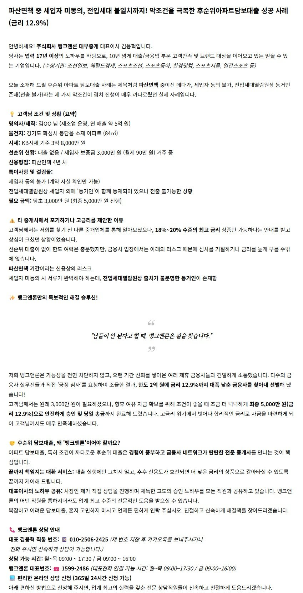
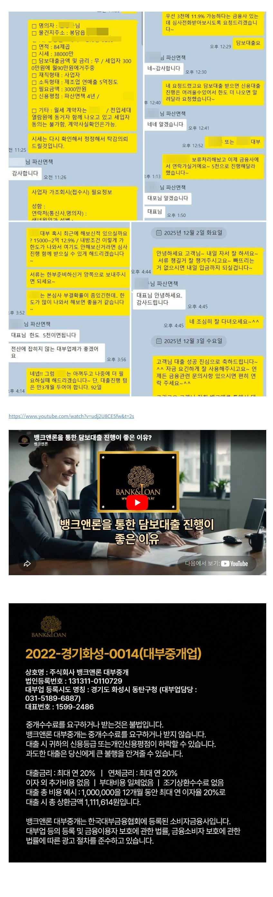

[후순위아파트담보대출] 파산면책자 2억 12.9% 심사승인후 5천 신청하여 승인완료 사례

? 공식 홈페이지에서 신청하기 https://www.banknloan.kr/대출상품/담보대출/주택담보대출
? 네이버 카페에서 신청하기 https://cafe.naver.com/cityman88/29497

https://cafe.naver.com/cityman88/311364

? 공식 홈페이지에서 신청하기 https://www.banknloan.kr/대출상품/담보대출/주택담보대출
? 네이버 카페에서 신청하기 https://cafe.naver.com/cityman88/29497
